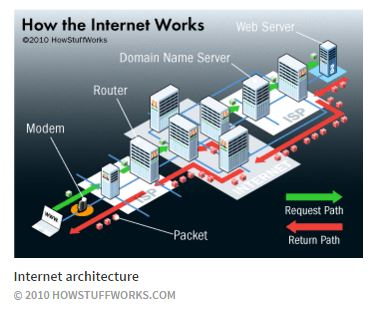

Blog Entry Week 8: Research
How the Web Works
April 3, 2016
As we are nearing the end of phase 0, we are researching the technical aspects of the tech industry. Since we all use the web in everyday life and this is the industry I'm looking to move into it would be good to have at least a general comprehension of how the whole thing works. This is important to understand so that as a developer you know the range and limitations and how to work with them in mind.
How you got to this page:
So for most of us this is how the web works...
But of course there is a lot going on behind the scenes, but here is the basic run down. Your computer, smart phone, internet enabled device (known as clients) makes a request through the internet service provider. This request is broken up into packets per internet protocals (TCP/IP) which communicates to the Domain Name Servers which retreives the data in packets and then reassembled using the same protocals.
Because of the universal protocals, the individual packets can travel many different routes so that lots of data can be sent and retrieved without getting backlogged. This helps make the web a roubust and powerful tool.
So there's the 1000 foot look at the Web. I found this article helpful in understanding this process. Thanks for reading.